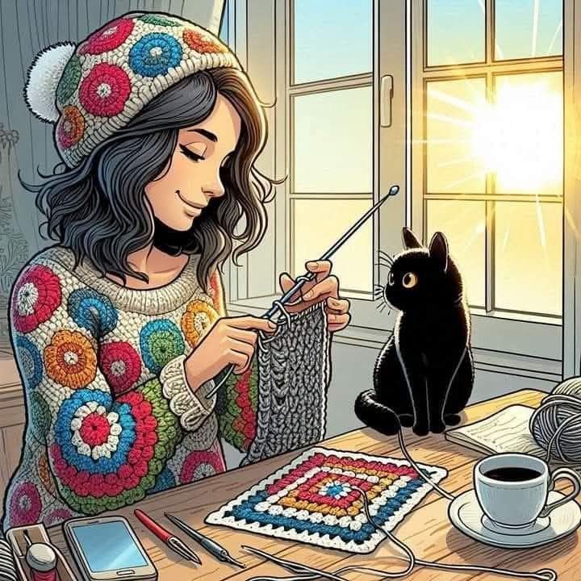

Feito com amor,carinho
e um pouco de Café


Bem-vindo ao meu cantinho, onde cada nó conta uma história e cada peça carrega um pedacinho de afeto. Aqui, o crochê deixa de ser apenas linha e agulha para se transformar em peças únicas, tecidas com paciência e dedicação. Convido você a explorar nosso catálogo e descobrir como o trabalho artesanal pode levar mais cor, conforto e personalidade para o seu dia a dia.

Aos 24 anos, descobri que a felicidade mora nos detalhes: no aroma de um café recém-passado, no ronrono de um gato e na paz de um momento de silêncio. Foi nessa busca por tranquilidade que o crochê entrou na minha vida, transformando-se em muito mais que um hobby. Cada ponto que teço é um refúgio de conforto e uma forma de materializar o carinho e a calma que acredito que o mundo precisa.